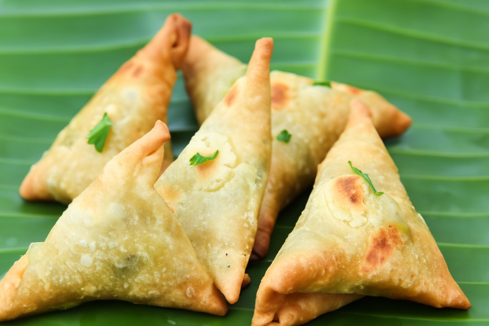

Samosa

Description
A samosa (/səˈmoʊsə/) ( Persian: سمبوسه) from the Persian word sambosag (سنبوسگ) (meaning 'triangular pastry') is a fried south asian and west asian snack. it is a pastry with a savory filling, mostly vegetables, spiced potatoes, onions, and peas, but also meat or fish. it is made in different shapes, including triangular, cone, or crescent, depending on the region. samosas are often accompanied by chutney, and have origins in medieval times or earlier. sweet versions are also made. samosas are a popular entrée, appetizer, or snack in the cuisines of india, south asia, west asia, central asia, east africa and their south asian diasporas. [source]
Ingredients
- 2 cups of sifted flour
- 1 tsp of salt
- 2 Tbsp of oil
- Cold water to kned
- Filling of your choice
- Oil for deep frying
[source]
Steps
- Mix the refined flour, salt and oil. Add water and knead into a firm but pliable dough.
- Make into 8-10 smooth balls. Roll into thin rounds, about 15cm/6" in diameter, and cut into halves.
- Take one half, wet the edges, and fold the straight edge at the center to bring the two halves together, overlapping a bit to form into a triangular case.
- Press the overlapping portion, and fill the case with the filling, leaving a margin of 1cm/ 1/2 inch all around.
- Press the edges together to seal the samosas.
- Fill all the pieces in the same manner, keeping them covered with a damp cloth.
- Heat oil till a piece of dough thrown in, comes up immediately.
- Add as many samosas as come in without touching each other.
- Lower the heat to medium. Fry to a golden brown on either side. Serve hot, with a chutney.
[source]